Povray offre de nombreuses autres primitives géométriques, permettant la modélisation et le rendu d'objets beaucoup plus complexes. Dans cette partie, vous allez en étudier quelques unes ...
|
#include "colors.inc" camera {location <0,7,-10> look_at <0,0,0> } background { White } light_source { <100,100,-200> rgb 0.9} lathe { linear_spline 5, < 3, 0 >, < 4, 0 >, < 5, 5 >, < 3, 5 >, < 3, 0 > pigment { YellowGreen } finish {ambient .3 phong 1} } | 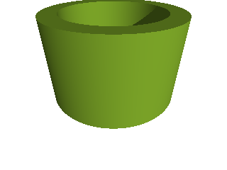 |
| 1. Modifiez le code précédent de manière à obtenir cette forme. | 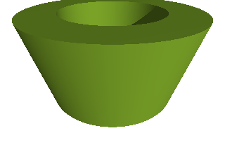 |
| 2. Modifiez de nouveau ce code pour obtenir cette nouvelle forme. | 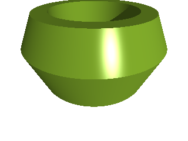 |
| 3. Testez à présent les splines quadratiques et cubiques sur la forme de la question précédente. | |
| 4. Recherchez les modifications très simples à apporter à la forme initiale (en termes de point(s) supplémentaire(s) et de spline) pour obtenir la forme ci-contre. Il est conseillé de commencer par obtenir une forme générale à l'aide des splines linéaires. | 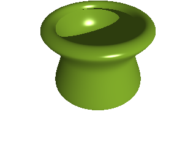 |
| 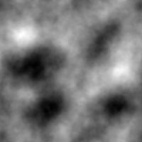 | 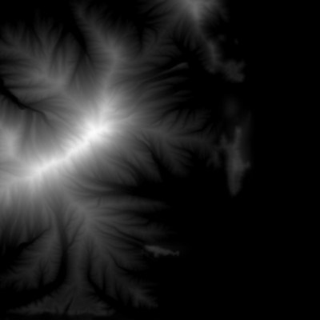 | 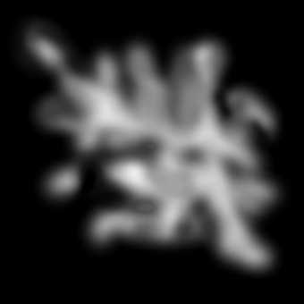 |
| 1. Créez un script Povray permettant d'obtenir une vue d'un MNT à partir de l'une des images proposées. On conseille de recentrer le MNT à l'origine du repère et de lui appliquer une mise à l'échelle importante, de manière à faciliter sa manipulation et sa visualisation. Par exemple, la vue ci-contre est obtenue à partir de la première image, avec une mise à l'échelle d'un facteur 1000 en x et z et 300 en y. | 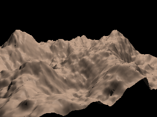 |
| 2. Modifiez votre script de manière à obtenir l'image ci-contre. | 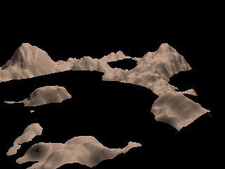 |
| 3. Modifiez votre script de manière à obtenir l'image ci-contre. | 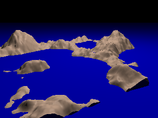 |
| 4. On souhaite à présent obtenir la partie inférieure du MNT, comme illustré sur la figure ci-contre. Comment faire ? | 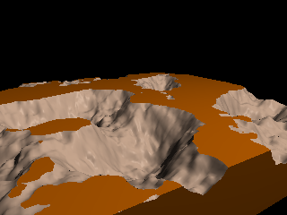 |
| 5. Comment modifier (très simplement) le script pour obtenir la même couleur de base, sans changer les attributs de couleur dans le MNT ? | 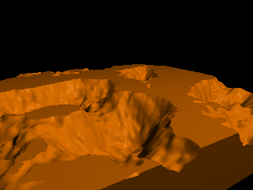 |
| 6. En déduire un script permettant d'obtenir le résultat ci-contre. | 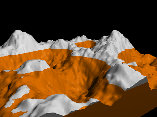 |
| 7. Essayez à présent d'obtenir un résultat proche de celui présenté ci-contre. Choisissez bien evidemment les couleurs qui vous conviennent. A titre d'information, les quatres couleurs suivantes ont été utilisées : White, LightWood, ForestGreen et Green. | 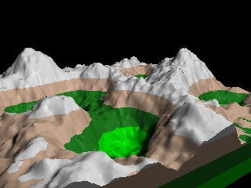 |